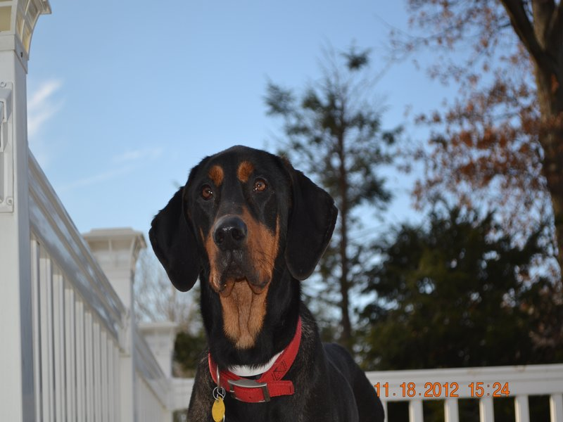

Howie
Howie was are 2nd foster. Howie is a big gofy loveable guy.His owners ran into hard times and had to surender him to a shelter in Georgia.The bad thing about shelters in Georgia is that they are kill shelters. His time was almost up when my wife and I said yes we will foster him. We got him in October of 2012 and he was adopted 2 months later.